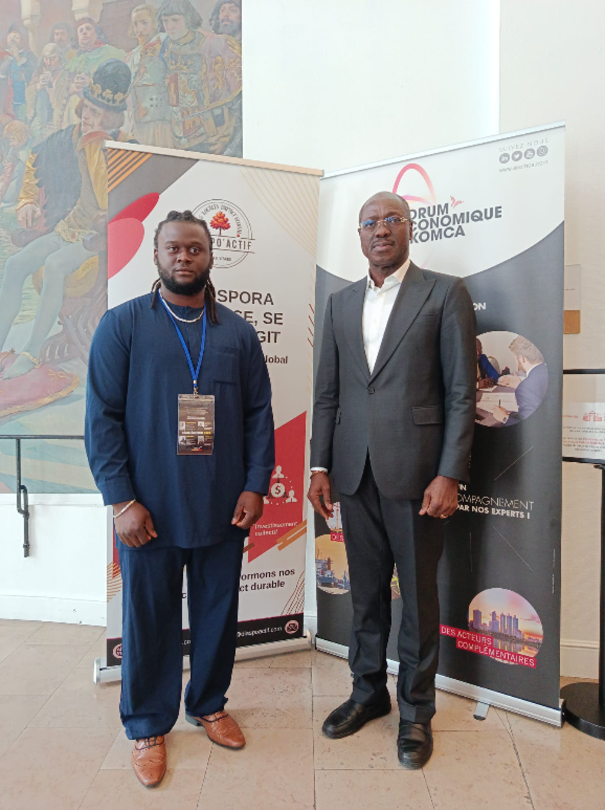
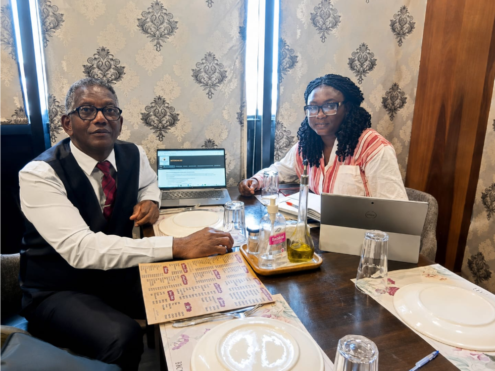
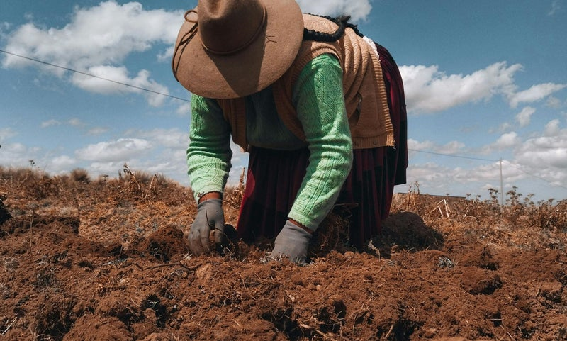
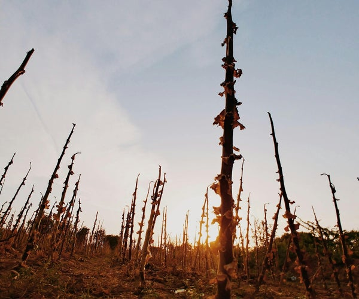
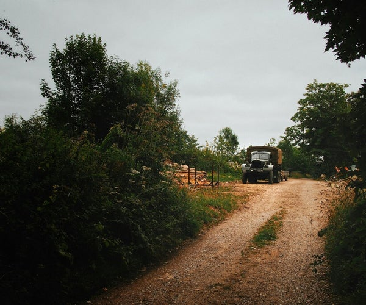
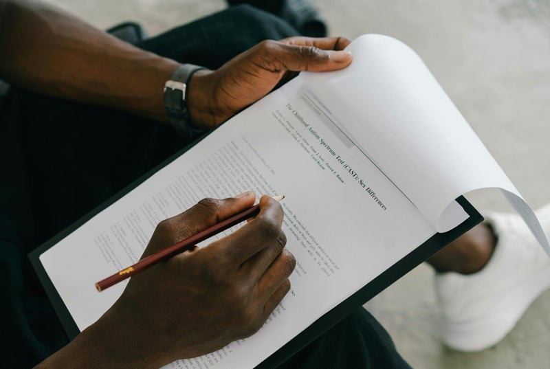
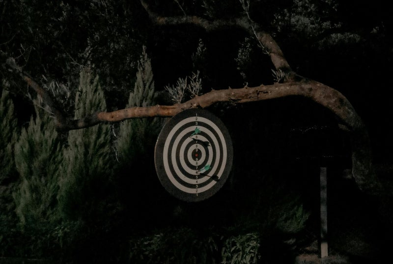

Nos actions
Diaspo'Actif agit chaque jour à travers des actions concrètes sur le terrain et des initiatives à fort impact — du Sud au Nord.

Organisation du Forum Économique AKOMCA
Nous avons eu l'honneur de contribuer à l'organisation de la 6ᵉ édition du Forum Économique AKOMCA, réunissant des décideurs économiques et politiques ivoiriens et français autour des enjeux du développement territorial.
À cette occasion, nous avons présenté notre vision de la diaspora comme un acteur stratégique du développement économique, social et territorial de la Côte d'Ivoire, à travers ses compétences, ses investissements et ses réseaux.
Cette rencontre a permis de créer de nombreuses opportunités de collaboration et de faire émerger plusieurs projets concrets que nous déployons progressivement, avec la volonté de transformer les idées en actions durables au service du développement.
Rencontre avec notre partenaire ANADER
Nous avons eu le plaisir de rencontrer les équipes de l'ANADER afin de présenter nos solutions de sécurisation des investissements agricoles et d'échanger sur l'accompagnement, la formation et le suivi des exploitations.
Cette rencontre a permis d'identifier de fortes synergies et de poser les bases d'un partenariat stratégique. Ensemble, nous œuvrons pour proposer à la diaspora des projets agricoles plus sûrs, mieux encadrés et accompagnés par des acteurs institutionnels de référence.

Rencontre entrepreneurs sur le terrain
Dans le cadre du lancement de notre programme d'exploitations agricoles, notre ingénieure agricole s'est rendue sur le terrain afin de finaliser les derniers paramètres opérationnels.
Cette mission a permis de valider le processus de mise en œuvre, de définir les rôles des différents intervenants et d'établir un cahier des charges garantissant une organisation rigoureuse.
Cette étape marque une avancée majeure vers le démarrage de nos premières exploitations agricoles, avec pour objectif d'assurer la sécurité des investissements et la réussite des projets portés par la diaspora.
Nous le savons que trop bien.
Chaque année, des millions de membres des diasporas souhaitent entreprendre, investir, transmettre leurs compétences ou contribuer au développement de leur pays d'origine.
Pourtant, beaucoup se heurtent aux mêmes difficultés :
C'est pour répondre à ces défis qu'est née Diaspo'Actif.
Un modèle fondé sur quatre principes
Investissement participatif et collaboratif
Projets à fort impact social et économique
Sécurisation avec les institutions locales
Transparence et partage des résultats
Des ponts de collaboration, concrets.
Au-delà des idées, nous travaillons à construire de véritables ponts de collaboration entre les diasporas, leurs pays d'origine et leurs pays d'accueil.
Dans cette dynamique, nous avons lancé plusieurs projets pilotes, notamment dans le domaine agricole, fondés sur notre modèle de sécurisation des investissements par les institutions étatiques du pays d'origine. Ces premières expérimentations sont actuellement en cours et nous publierons prochainement les résultats ainsi que les données issues de leur mise en œuvre.
Notre ambition dépasse la simple réalisation de projets. Nous souhaitons créer un écosystème durable de confiance, de coopération et d'investissement, où chaque initiative contribue au développement économique, social et territorial des régions concernées.
Nous sommes convaincus que les diasporas constituent un formidable levier de développement lorsqu'elles peuvent agir dans un cadre sécurisé, transparent et en partenariat avec les acteurs publics et privés de leurs pays d'origine comme d'accueil.



Diaspo
Impact
La passerelle de confiance qui transforme l'attachement à son pays d'origine en investissements structurés, sécurisés et créateurs de prospérité.
En savoir plus sur Plateforme Diaspo'Actif →
Faire de chaque investissement un levier de développement

Le développement durable d'un territoire ne peut reposer uniquement sur les financements publics ou privés. Il doit s'appuyer sur une coopération forte entre les collectivités, les entrepreneurs, les citoyens et la diaspora.
Plateforme Diaspo'Actif souhaite devenir cette passerelle de confiance qui transforme l'attachement à son pays d'origine en investissements structurés, sécurisés et créateurs de prospérité.
Le premier réseau international de coopération de la diaspora
Construire le premier réseau international de coopération entre la diaspora, les collectivités territoriales et les partenaires économiques — afin de faire de chaque investissement un levier de développement local, de création d'emplois et de croissance durable.